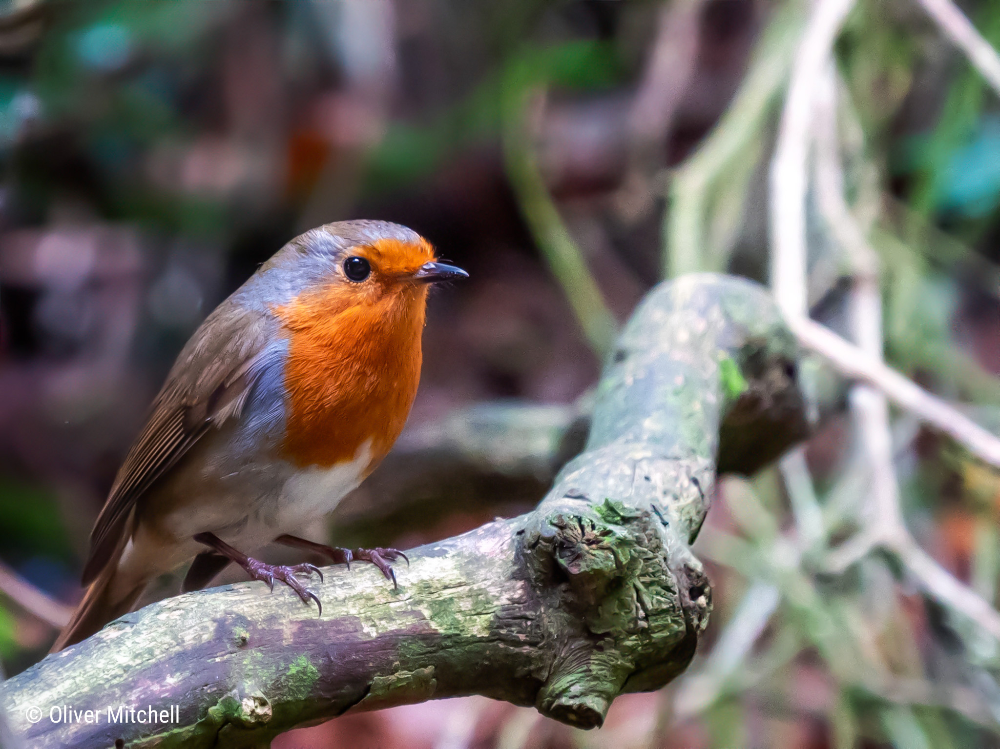

For me, the Lumix G9’s light weight makes up for the drawbacks
inherent to the MFT system. If I’m working from home, I often
sling the G9 over my shoulder during a lunch break and try and
capture wildlife in the woodlands near my house.
> open